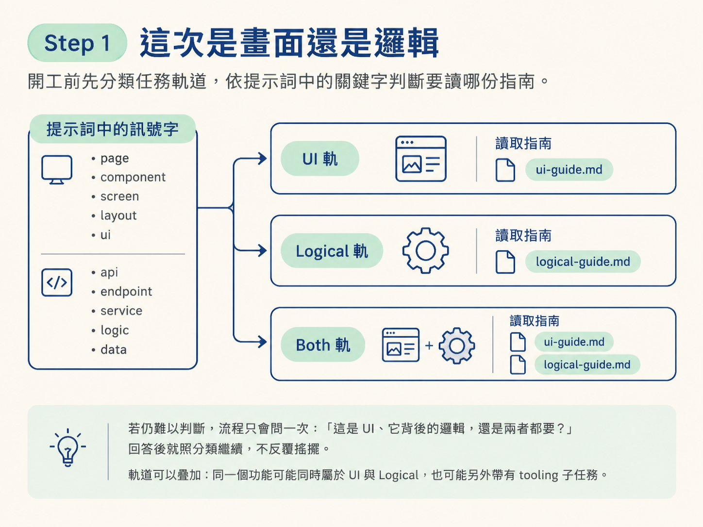
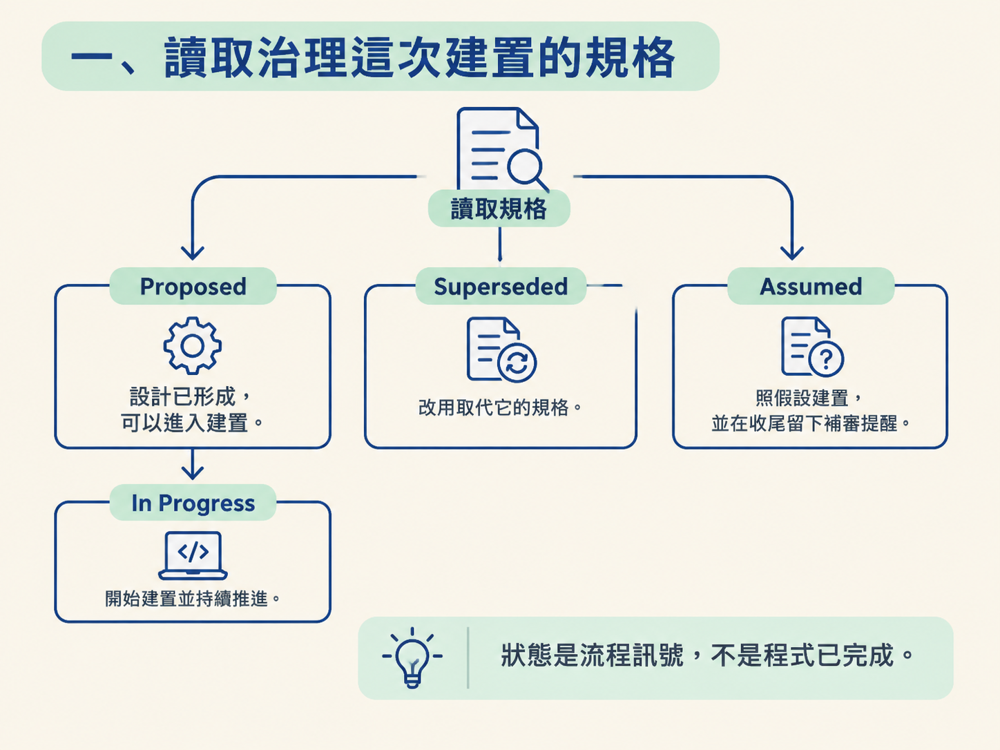
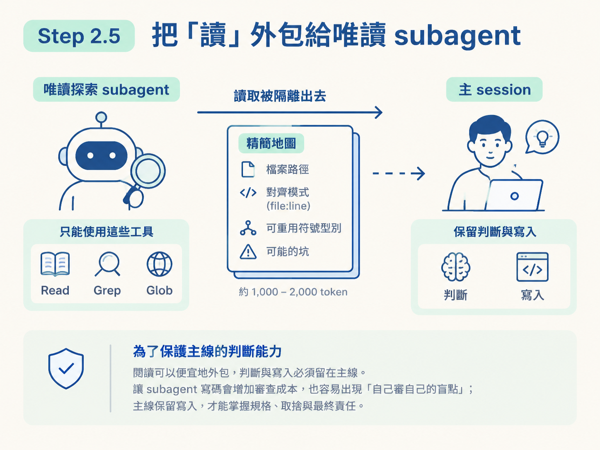
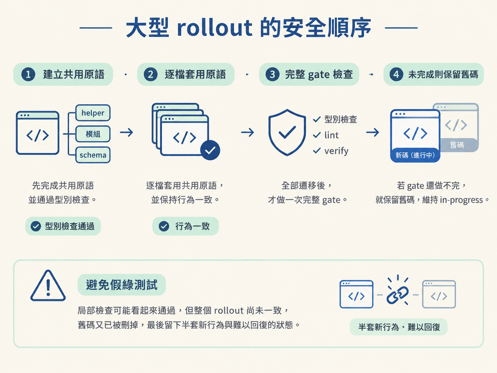
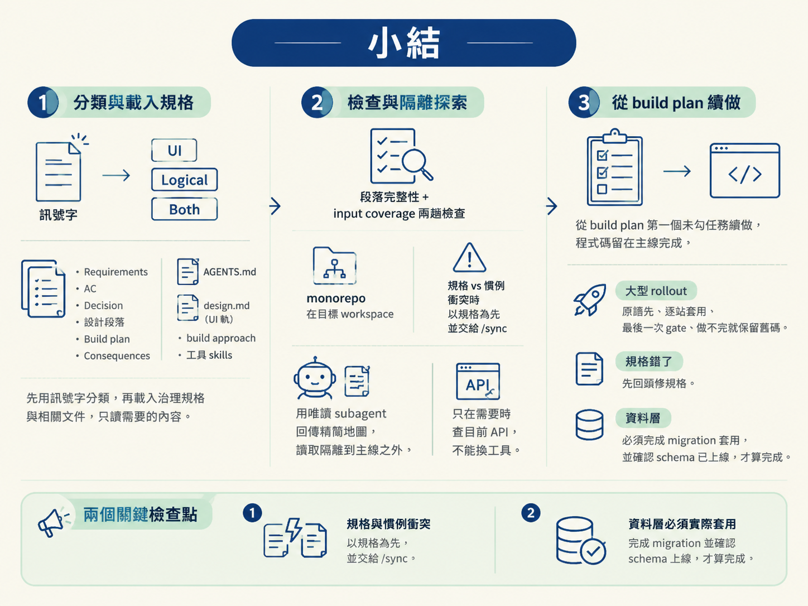

完成閘門後的 Step 1 到 Step 3：先從提示詞的訊號字判斷要走 UI、Logical 或 Both 軌；接著載入規格與 AGENTS.md，確認內容完整；再用唯讀的 subagent 隔離探索，最後從 build plan 的進度接著做，並且只在主線寫入程式碼。
上一節已經確認這項工作沒有懸而未決的決策，可以開始建置。但「可以動手」不等於「馬上打字」。就像施工前要先看圖、確認材料，再丈量現場；有紀律的工程師也會先搞清楚工作類型、讀完這次要遵守的合約與慣例，最後才探索程式碼。
/develop 的 Step 1 到 Step 3，就是把這個順序固定下來：
這套流程的目的，是把「憑感覺開工」換成「照順序開工」。後面幾個規矩尤其重要：規格與一般慣例衝突時要立旗、讀取可以隔離但判斷不能外包、發現規格站不住腳時必須先回頭修規格。
分類要看提示詞裡的訊號字，不要靠猜。產品詞彙通常已經透露了工作類型：
| 訊號 | 軌道 | 讀哪份指南 |
|---|---|---|
page、component、screen、layout、ui；附有截圖；或是對著 design.md 做視覺工作 | UI | ui-guide.md |
api、endpoint、service、functionality、logic、data、job、webhook、integration | Logical | logical-guide.md |
兩種訊號同時出現，例如 auth 同時包含頁面與 session 邏輯 | Both | 兩份都讀，各自完成所屬部分 |
如果仍然難以判斷，流程只會問一次：「這是 UI、它背後的邏輯，還是兩者都要？」回答後就照分類繼續，不反覆搖擺。軌道可以疊加：同一個功能可能同時屬於 UI 與 Logical，也可能另外帶有 tooling 子任務。

分類完成後，讀這次功能真正會用到的資料。重點不是把整個 repository 翻過一遍，而是只載入本次建置的必要上下文，避免無關內容把主線 context 塞滿。
沿著 feature 的 spec 指標打開規格，但只讀建置需要的段落：
AC-1…。這是實作合約，也是之後產生 verify 步驟的來源。Feature design、Proposed stack 或規格表。AC-N。Context、Options considered、Rationale 通常是決策歷史，不是建置輸入。除非某項限制需要回頭確認理由，否則跳過即可。
如果是 umbrella 規格，先讀 index.md。它包含決策、子規格清單，也可能包含跨子規格的合約；接著只讀這次子任務碰得到的子規格。通常一份就夠，只有真的跨到第二份時才繼續讀，不能把所有子規格一次灌進 context。
開工前也要確認狀態。單一功能看它自己的規格狀態；umbrella 功能看 index.md，子規格本身不帶狀態。
Proposed：對已經由 /architect 設計並連上的功能規格而言，代表「已談妥，但還沒建置」。可以直接開始，並推進到 In Progress，不用額外警告。Superseded：改用取代它的規格，不要繼續依這份實作。Assumed：代表前一節留下的假設。照記錄中的假設建置，並在收尾時帶上需要補審的提醒。這裡之所以要把 Proposed 與 Accepted 的意義分開，是因為規格的狀態不能被誤當成「程式已完成」。Proposed 表示設計已經形成、可以進入建置；Accepted 則應保留給已經完成審議、正式接受的決策。狀態是流程訊號，不是裝飾文字。

AGENTS.md讀離目標程式區最近的 AGENTS.md。它包含先前功能同步過來的決策與慣例。已經拍板的事情不要重新詢問，這正是 spec 一路傳到 AGENTS.md 的價值：讓後續建置可以沿著既有決策前進。
design.md：只有 UI 軌需要UI 軌要把 design.md 當成視覺真相來源。它描述性格、建置指令、構圖與元件規則；真正的 token 值則放在專案自己的樣式或主題系統裡。兩者分工不同，不要把同一份內容重複維護。
build approach 決定「這一刀要怎麼組裝」，不是決定「要裝進哪些功能」。優先順序如下：
AGENTS.md 的專案預設。可用的策略包括：垂直端到端切片、最薄可用整體、先做 UI 殼再接邏輯，以及每個階段完成一條使用者旅程。如果完全沒有記錄，預設採用一致的端到端切片，把這個功能涉及的各層一起串起來。
規格的 ## Decision 裡有 Implementation skills 欄位，列出這次會用到的工具；AGENTS.md 的 ## Agent skills 則列出專案安裝了哪些 skill，以及它們放在哪裡。
只要某個 skill 會直接影響你即將修改的程式碼，就讀它的 SKILL.md，並遵守其中慣例。按需讀取，不要把整個專案的 skills 全部載入。如果讀不到某個 skill，就依規格與已有知識繼續建置，並在報告中註明。
monorepo：看到 Workspaces 設定，或 apps/*、packages/*，就要先判斷功能屬於哪個 workspace。接下來必須在該 workspace 內工作，使用它自己的 AGENTS.md、design.md 與套件管理指令；指令也要 scoped 到這個 workspace。否則你可能在錯的根目錄執行正確的指令，結果仍然不對。
衝突：功能專屬的規格優先於一般專案慣例，AGENTS.md 管理未被規格覆寫的通用情況。發生衝突時不能默默選一邊，必須明確立旗，例如：「spec NNNN 在 X 點上與 AGENTS.md 分歧，應由 /sync 調解。」規格沒有提到的部分，才由 AGENTS.md 接手。
完整性：寫任何程式碼之前就要檢查兩次，不要寫到一半才發現地基少了一塊。
如果發現缺口，要依它是承重決策還是實作細節來處理。承重的缺口一定要先持久化答案，不能只把結論留在對話裡，否則下一次壓縮 context 或重新開 session 後，決策就可能消失。
動手前通常要找出三類資訊：要改哪些檔案、專案裡有哪些既有模式、哪些符號或型別可以重用。這些工作都會打開檔案，而每個檔案內容都會留在主 session 的 context 裡。大型 repository、monorepo 或跨多檔功能，很快就會讓主線的思考空間被讀取內容吃掉。
因此，可以把探索隔離給唯讀的探索 subagent。它只回傳一張精簡地圖，約一到兩千個 token，內容包括：
file:line。它不回傳大段檔案內容，也不做任何編輯；工具只允許 Read、Grep、Glob。模型使用便宜、快速的那一級，不要消耗目前 session 的主力模型。
小型改動、已經知道目標檔案，或是在 context 還很輕的新 session 裡，可以跳過這一步。大 repository、monorepo、需要碰很多檔案，或對該區域不熟時，則應該執行探索。
這個分工不是為了偷懶，而是為了保護主線的判斷能力：閱讀可以便宜地外包，判斷與寫入必須留在主線。讓 subagent 寫碼會增加審查成本，也容易出現「自己審自己的盲點」；主線保留寫入，才能掌握規格、取捨與最終責任。

如果要使用的工具更新很快，且你不確定記得的用法是否仍然有效，可以派一個唯讀的網路 subagent 查目前版本的用法。同樣使用便宜模型，只回傳精簡摘要。
但界線必須清楚：這個查詢只能回答「已經決定採用的工具要怎麼用」，不能拿來回答「我們要不要改用這個工具」。大多數建置不需要查文件；在穩定的技術棧上，直接實作，讓型別檢查、建置與 lint 的迴圈抓出過時 API 即可。
如果查完文件才發現原本指定的工具根本行不通，這代表規格可能有問題。應該走「規格錯了」的流程，而不是趁機偷偷替換工具。
任務清單住在規格裡。 規格的 ## Build plan 是原子級清單，每個任務都標記它服務哪個 AC。依清單執行並勾選進度，這就是續做的軌跡。
scope 只放里程碑摘要，位於功能的 Build it 區塊底下，通常是二到五個子項。Verify it 與 Test it 屬於 /check verify 與 /test，不歸 /develop 管。
先續做，不要重做已完成的工作。 找到 build plan 裡第一個未勾選的 [ ]，從那裡開始；已經勾選的任務不要重新執行。
如果 scope 中的功能狀態是 existing（已出貨）或 dropped（已移出範圍），它就不是正在進行的工作。不要自動覆蓋，先說明目前狀態，並確認要復活還是修改。
開始建置時，把功能狀態設成 in-progress，並把規格的 **Status** 從 Proposed 推進到 In Progress。這是外科手術式的修改：動手前再讀一次狀態，只改那一行；如果狀態已經不是 Proposed，就立旗，不覆蓋。唯一例外是 Assumed 規格，它代表決策尚未審議，狀態要保留原樣。
程式碼在主線寫，不派 subagent 代寫。 即使建置很大、涉及很多檔案，也要拆成有順序的區塊，邊做邊勾 build plan。工作時間很長時可以使用 /compact，因為真正的狀態保存在 scope 與 spec 這兩份檔案裡，不會因為壓縮 context 而遺失。
如果要套用一個已經決定好的模式，而且範圍很大，例如把 17 個檔案裡的行內輸入框全部替換掉，就不能一邊改一邊隨意清理。請固定按照以下順序：
/check verify。不要每站都做一次完整 gate。被取代的舊碼也要等這次全綠掃描後才移除。in-progress，清楚報告哪些站完成、哪些尚未完成，並說明下一次執行 /develop 會跳過已遷移部分，繼續完成其餘站點。這樣做是為了避免假綠測試：局部檢查可能看起來通過，但整個 rollout 尚未一致，舊碼又已被刪掉，最後留下半套新行為與難以回復的狀態。

規格錯了，就回頭改規格，不要默默偏離。 如果實作到一半發現資料模型撐不住，或某條驗收條件與 API 介面互相矛盾，而正確做法必須偏離規格，請在寫下偏離之前停下來，把問題交回 /architect 更新或取代規格。等規格反映現實後再繼續，才能讓規格與程式碼保持同步。
資料層沒有真正套用，就不算完成。 產生 migration 檔案不等於完成資料庫變更。必須真的對目標資料庫執行 migration，再透過資料庫查詢或 introspection 確認 schema 已上線：表、欄位與關聯都要實際存在。只有「已產生、尚未套用」等於還沒做完。
如果規格指定了驗證方式，也要依指定協定執行。沒有測試框架的專案很常見，例如規格可能要求「每個子任務後 typecheck 必須通過」。這時就照協定檢查，子任務通過才算完成，不要自行假設專案一定有測試套件。
閘門通過後，先用訊號字把工作分成 UI、Logical 或 Both。接著載入治理規格，只讀建置需要的 Requirements、AC、Decision、設計段落、Build plan 與 Consequences，再讀最近的
AGENTS.md、UI 軌的design.md、build approach 與必要的工具 skills。寫碼前完成段落完整性與 input coverage 兩趟檢查。monorepo 要在目標 workspace 裡工作；規格與慣例衝突時規格優先，並立旗交給
/sync。Step 2.5 用便宜的唯讀探索 subagent 回傳精簡地圖，把讀取隔離到主線之外；Step 2.6 只在需要時查目前 API，不能藉此偷偷換工具。Step 3 從
build plan第一個未勾任務續做，程式碼留在主線完成。大型 rollout 遵守「原語先、逐站套用、最後一次 gate、做不完就保留舊碼」；規格錯了先回頭修規格；資料層則必須完成 migration 套用並確認 schema 已上線，才算真的完成。

分類完成後，工作會分成對應軌道。下一節先走 UI 軌：確認它的完成標準、四條設計來源，以及「設計先行、整合其次」的兩趟建置流程。